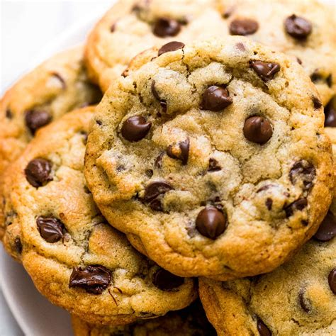

Cookies

In this page, I'll explain the recipe for cookies.
Cookies are one of the most popular sweets in the world.
They are one of the most simple sweet you can make, but they can still be hard to make.
For the ingredients, you'll need:
- Flour
- Sugar
- Baking soda or baking powder
- Salt
- Softened butter
- Eggs
- Vanilla extract
How to make cookies
- Preheat your oven to 180°C.
- In a mixing bowl, cream together the softened butter and sugar until light and fluffy.
- Add egg and vanilla extract to the mixing bowl and beat them in until well combined.
- In another bowl, whisk together the flour, baking soda or powder, and salt.
- Gradually add the dry ingredients to the wet mixture, mixing until just combined. Do not overmix.
- Drop spoonfuls of dough onto a baking sheet lined with parchment paper, leaving space between each cookie.
- Bake in the preheated oven for 10-12 minutes, or until the edges are golden brown.
- Allow the cookies to cool on the baking sheet for a few minutes before transferring them to a wire rack to cool completely.
Home